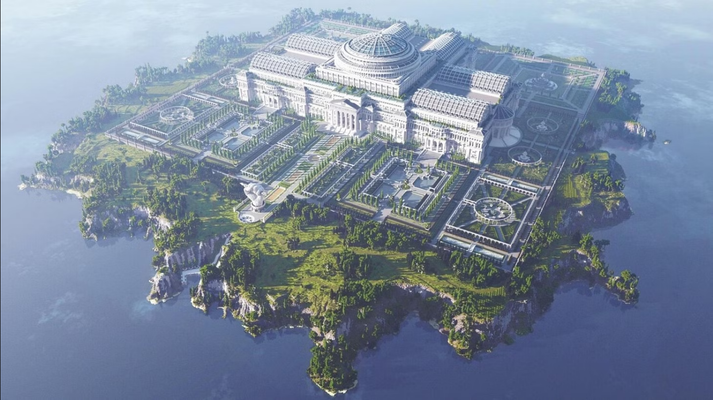
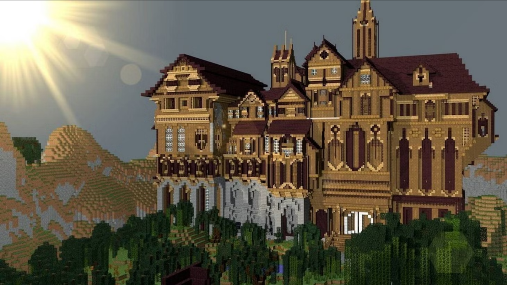
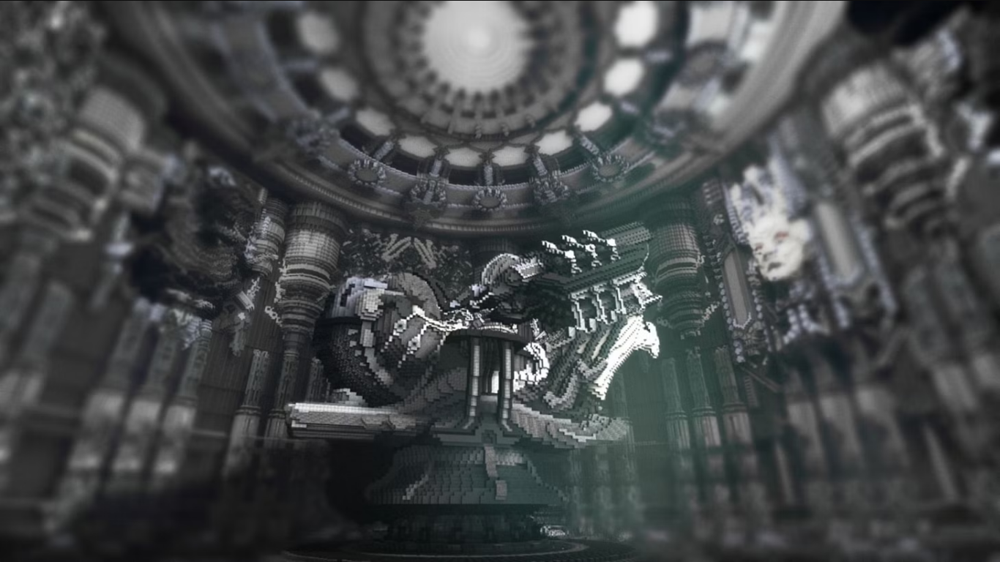
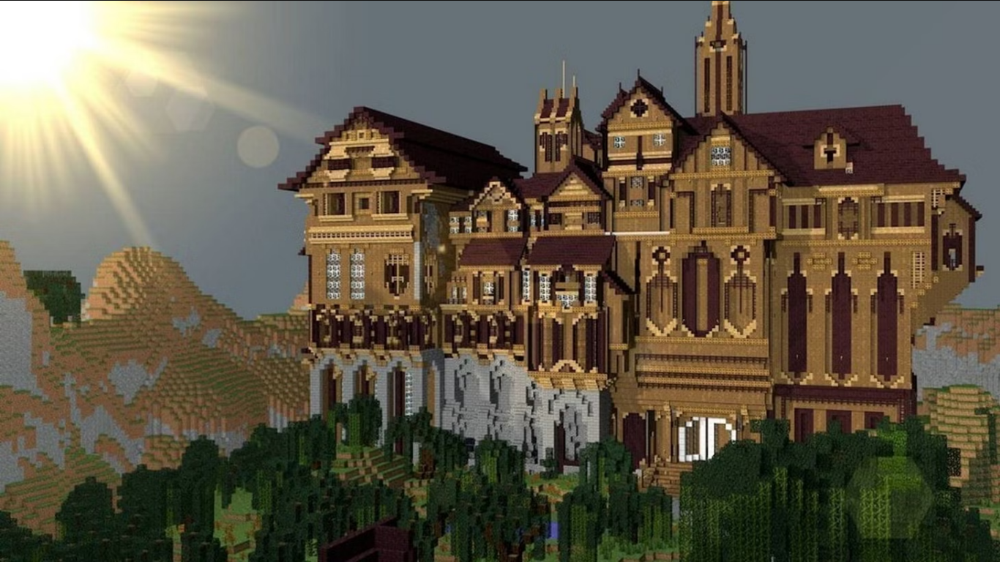
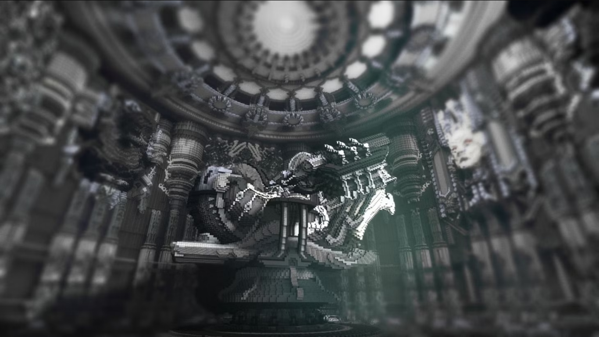
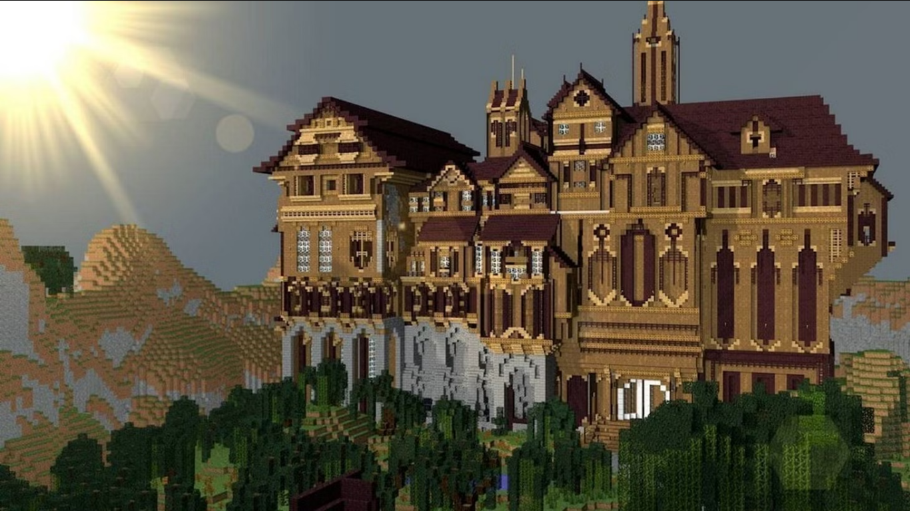
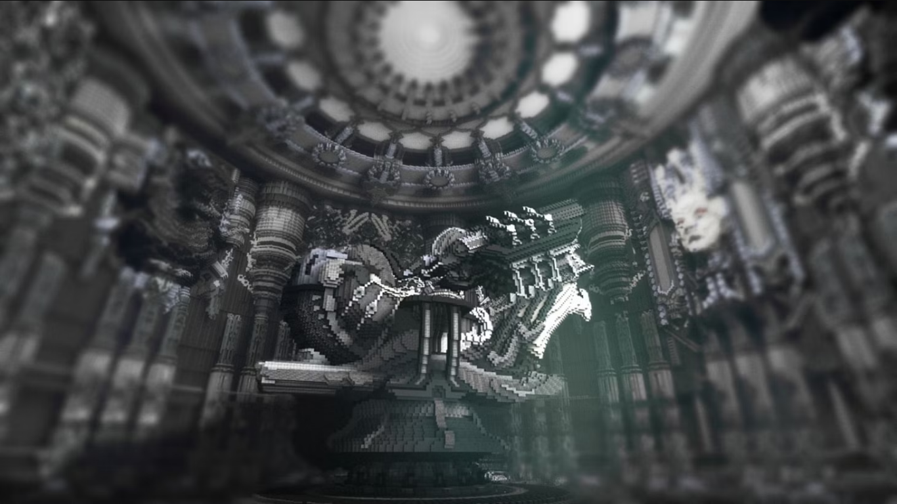

🌍 История Minecraft
Minecraft был создан в 2009 году Маркусом Перссоном (Notch). Игра позволяла строить миры из блоков и быстро стала популярной. В 2011 году был официальный релиз, а в 2014 году Mojang купили Microsoft. Игра обрела культовый статус и активно развивается до сих пор.
🎮 Геймплей
- Исследование мира
- Добыча ресурсов
- Крафт предметов и строительство
- Битвы с мобами
- Игровые режимы: Выживание, Творчество, Хардкор
👾 Мобы в Minecraft
| Название | Тип | Агрессивность | Где встречается | Издаваемые звуки |
|---|---|---|---|---|
| Зомби | Враждебный | Да | Ночью, в пещерах | |
| Крипер | Враждебный | Да | В тени, ночью | |
| Эндермен | Нейтральный | Если атакован | Мир, Край | |
| Корова | Мирный | Нет | Луга, равнины | |
| Скелет | Враждебный | Да | Ночью, в пещерах | |
| Эндер-дракон | Босс | Да | Край | |
| Житель | Мирный | Нет | Деревни |
🏗️ Строительство в Minecraft
Строительство - одна из ключевых механик Minecraft, позволяющая игрокам реализовывать самые смелые архитектурные проекты. От простой хижины до сложных механизированных сооружений - возможности ограничены только вашей фантазией!
🔨 Основные принципы строительства:
- Используйте различные материалы для текстуры (камень, дерево, стекло)
- Экспериментируйте с освещением (факелы, светокамни, лампы)
- Создавайте объемные формы с помощью лестниц и плит
- Используйте воду и лаву для декоративных элементов
🏛️ Популярные стили строительства:
| Стиль | Материалы | Особенности |
|---|---|---|
| Средневековый | Камень, дерево, факелы | Башни, зубчатые стены, подъемные мосты |
| Современный | Стекло, бетон, кварц | Чистые линии, большие окна, минимализм |
| Фэнтези | Пурпурные блоки, энд-камень | Парящие острова, магические символы |
| Подземный | Камень, лава, грибницы | Лабиринты, скрытые комнаты, ловушки |
🖼️ Галерея

 





🧩 Популярные моды Minecraft
- OptiFine — улучшает графику, добавляет поддержку шейдеров и повышает FPS.
- IndustrialCraft — вводит технологии, генераторы и механизмы.
- Biomes O' Plenty — добавляет десятки новых биомов и красивую генерацию мира.
- JourneyMap — мини-карта и отображение карты мира в браузере.
- Thaumcraft — магия и исследования в Minecraft.